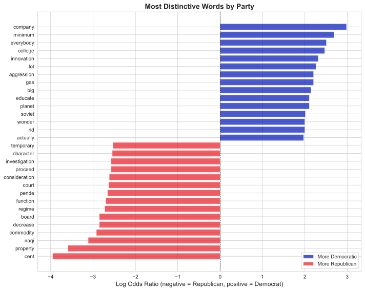
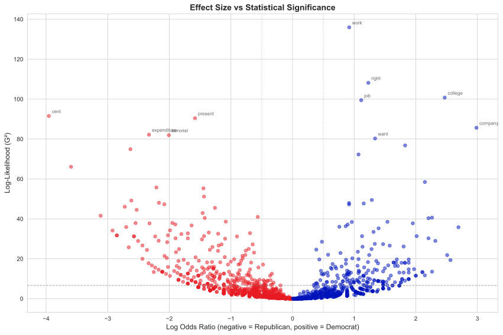

Comparing corpora, lemmatization, and statistical significance
Published
2025-11-01 13:32:40
1 Learning objectives
By the end of this lab, you will understand:
How to compare word usage across different groups or corpora
What lemmatization is and why it matters for text analysis
The difference between stemming and lemmatization
Why simple frequency comparisons can be misleading
How to measure statistical significance with log-likelihood (G²)
How to quantify effect size with log odds ratio
What named entities are and how to extract them
How to use spaCy for advanced NLP tasks in Python
2 Introduction: Why compare corpora?
In social and political science, texts often serve as proxies for social phenomena, sentiments, ideas, or discourses. A common research design involves collecting texts from different institutions, groups, or actors to create contrasting corpora. By comparing word usage across these corpora, we can infer something about the underlying social or political features of the entities they represent.
2.1 The research question
Consider this scenario: Do Democratic and Republican presidents talk differently? Not just in terms of political positions, but in the actual words they use?
In Lab 01, we compared authors based on pre-selected words (stop words, personal pronouns). This worked well for stylometry because function words are a closed class - we know all of them in advance.
But what about content words? If we want to compare the substance of what different groups talk about, how do we:
Avoid arbitrary word selection?
Distinguish meaningful differences from random variation?
Quantify both the significance and magnitude of differences?
This is where corpus comparison methods come in.
2.2 Our approach today
We’ll create two contrasting corpora:
Corpus A: State of the Union addresses by Democratic presidents (since 1917)
Corpus B: State of the Union addresses by Republican presidents (since 1917)
Then we’ll use statistical measures to identify which words are significantly over- or under-used in one corpus compared to the other.
Key insight: We’re not just looking for different words - we’re looking for statistically significant differences that reveal meaningful patterns.
3 Setup: Loading packages
# Data manipulationimport pandas as pdimport numpy as np# Text processingimport spacyfrom collections import Counter# Visualizationimport matplotlib.pyplot as pltimport seaborn as sns# Statistical functionsfrom scipy.stats import chi2# Set visualization stylesns.set_style("whitegrid")plt.rcParams['figure.figsize'] = (12, 6)print("✓ Packages loaded successfully")
We’ll continue using pandas, spaCy, and visualization libraries from Lab 01.
3.1 Loading spaCy model
# Load English language modelnlp = spacy.load("en_core_web_sm")nlp.max_length =1530000# https://github.com/explosion/spaCy/issues/13207#issuecomment-1865973378print(f"✓ spaCy model loaded: {nlp.meta['name']}")print(f" Language: {nlp.meta['lang']}")print(f" Components: {nlp.pipe_names}")
✓ spaCy model loaded: core_web_sm
Language: en
Components: ['tok2vec', 'tagger', 'parser', 'attribute_ruler', 'lemmatizer', 'ner']
4 Loading and preparing the data
Let’s load our State of the Union dataset:
# Load the dataspeeches = pd.read_csv("data/transcripts.csv")print(f"Total speeches: {len(speeches)}")print(f"Date range: {speeches['date'].min()} to {speeches['date'].max()}")print(f"\nFirst few rows:")speeches.head()
Total speeches: 244
Date range: 1790-01-08 to 2018-01-30
First few rows:
date
president
title
url
transcript
0
2018-01-30
Donald J. Trump
Address Before a Joint Session of the Congress...
https://www.cnn.com/2018/01/30/politics/2018-s...
\nMr. Speaker, Mr. Vice President, Members of ...
1
2017-02-28
Donald J. Trump
Address Before a Joint Session of the Congress
http://www.presidency.ucsb.edu/ws/index.php?pi...
Thank you very much. Mr. Speaker, Mr. Vice Pre...
2
2016-01-12
Barack Obama
Address Before a Joint Session of the Congress...
http://www.presidency.ucsb.edu/ws/index.php?pi...
Thank you. Mr. Speaker, Mr. Vice President, Me...
3
2015-01-20
Barack Obama
Address Before a Joint Session of the Congress...
http://www.presidency.ucsb.edu/ws/index.php?pi...
The President. Mr. Speaker, Mr. Vice President...
4
2014-01-28
Barack Obama
Address Before a Joint Session of the Congress...
http://www.presidency.ucsb.edu/ws/index.php?pi...
The President. Mr. Speaker, Mr. Vice President...
4.1 Creating contrasting corpora
We’ll split speeches by party affiliation. First, let’s define which presidents belong to which party (since 1917):
# Democratic presidents since 1917democrats = ["Woodrow Wilson", "Franklin D. Roosevelt", "Harry S. Truman", "John F. Kennedy", "Lyndon B. Johnson", "Jimmy Carter","William J. Clinton", "Barack Obama"]# Filter speechesspeeches_after_1917 = speeches[speeches['date'] >'1917-10-25'].copy()# Create party labelsspeeches_after_1917['party'] = speeches_after_1917['president'].apply(lambda x: 'Democrat'if x in democrats else'Republican')# Split into two corporadem_speeches = speeches_after_1917[speeches_after_1917['party'] =='Democrat']rep_speeches = speeches_after_1917[speeches_after_1917['party'] =='Republican']print("Democratic presidents:")print(dem_speeches['president'].value_counts())print(f"\nTotal Democratic speeches: {len(dem_speeches)}")print("\n"+"="*50)print("\nRepublican presidents:")print(rep_speeches['president'].value_counts())print(f"\nTotal Republican speeches: {len(rep_speeches)}")
Democratic presidents:
president
Franklin D. Roosevelt 13
Barack Obama 8
Harry S. Truman 8
William J. Clinton 8
Jimmy Carter 7
Lyndon B. Johnson 6
Woodrow Wilson 4
John F. Kennedy 3
Name: count, dtype: int64
Total Democratic speeches: 57
==================================================
Republican presidents:
president
Richard Nixon 12
Dwight D. Eisenhower 10
Ronald Reagan 8
George W. Bush 8
Calvin Coolidge 6
Herbert Hoover 4
George Bush 4
Gerald R. Ford 3
Donald J. Trump 2
Warren G. Harding 2
Name: count, dtype: int64
Total Republican speeches: 59
TipWhy start in 1917?
We chose 1917 as a cutoff to:
Ensure both parties have substantial representation
Focus on relatively modern political language
Avoid complications from 19th century political realignments
In your own research, such choices should be explicit and justified.
4.2 Combining texts by party
For corpus comparison, we’ll combine all speeches from each party into two large text collections:
# Combine all speeches by partydem_corpus =" ".join(dem_speeches['transcript'].tolist())rep_corpus =" ".join(rep_speeches['transcript'].tolist())print(f"Democratic corpus: {len(dem_corpus):,} characters")print(f"Republican corpus: {len(rep_corpus):,} characters")
5 From wordforms to lemmas: Introduction to lemmatization
5.1 The problem with raw words
Consider these sentences:
“The government regulates industry.”
“These regulations affect small businesses.”
“The regulatory framework is complex.”
These three words - regulates, regulations, regulatory - are clearly related. They share the same root concept of “regulation.” But if we count them separately, we miss this connection.
This problem is especially acute in languages with rich inflection (Russian, German, Finnish), but it exists in English too:
Verbs: walk, walks, walked, walking
Nouns: cat, cats, mouse, mice
Adjectives: big, bigger, biggest
5.2 Two solutions: Stemming vs lemmatization
Stemming: Crudely chop off word endings
running → run
better → bet (⚠️ wrong!)
organization → organ (⚠️ wrong!)
Fast but imprecise
Lemmatization: Reduce words to their dictionary form (lemma)
running → run
better → good
mice → mouse
Slower but accurate
5.3 How lemmatization works
Lemmatization requires:
Part-of-speech information: Is “running” a verb or a noun?
Morphological dictionary: What are all the forms of “run”?
Linguistic rules: How do irregular forms work?
Fortunately, spaCy does all this for us!
5.4 Lemmatization with spaCy
Let’s see lemmatization in action:
# Example textexample ="The regulations are regulating industries more effectively than previous regulatory frameworks."# Process with spaCydoc = nlp(example)# Show original word, lemma, and part of speechprint("Word → Lemma (Part of Speech)")print("-"*40)for token in doc:ifnot token.is_punct:print(f"{token.text:15} → {token.lemma_:15} ({token.pos_})")
Word → Lemma (Part of Speech)
----------------------------------------
The → the (DET)
regulations → regulation (NOUN)
are → be (AUX)
regulating → regulate (VERB)
industries → industry (NOUN)
more → more (ADV)
effectively → effectively (ADV)
than → than (ADP)
previous → previous (ADJ)
regulatory → regulatory (ADJ)
frameworks → framework (NOUN)
For this lab, the processing should take 2-5 minutes.
# Process Democratic speeches (this takes time!)print("Processing Democratic speeches...")dem_doc = nlp(dem_corpus)print("✓ Democratic corpus processed")# Process Republican speechesprint("Processing Republican speeches...")rep_doc = nlp(rep_corpus)print("✓ Republican corpus processed")
For the purposes of this lab, let’s work with a sample to speed things up:
# Take a sample of each corpus for faster processingdem_sample =" ".join(dem_speeches.sample(n=min(20, len(dem_speeches)), random_state=42)['transcript'].tolist())rep_sample =" ".join(rep_speeches.sample(n=min(20, len(rep_speeches)), random_state=42)['transcript'].tolist())# Process samplesprint("Processing samples...")dem_doc = nlp(dem_sample)rep_doc = nlp(rep_sample)print("✓ Processing complete")print(f"\nDemocratic sample: {len(dem_doc)} tokens")print(f"Republican sample: {len(rep_doc)} tokens")
We want to keep only content-bearing words. Let’s filter out:
Punctuation (., ,, !, etc.)
Numbers (1, 2020, million)
Symbols ($, %, @)
Proper nouns (specific names of people and places)
Stop words (optional - let’s keep them for now to see what happens)
# Extract lemmas from Democratic speechesdem_lemmas = []for token in dem_doc:ifnot token.is_punct andnot token.is_space and token.pos_ notin ['NUM', 'SYM', 'PROPN']: dem_lemmas.append({'lemma': token.lemma_.lower(),'pos': token.pos_,'party': 'Democrat' })# Extract lemmas from Republican speechesrep_lemmas = []for token in rep_doc:ifnot token.is_punct andnot token.is_space and token.pos_ notin ['NUM', 'SYM', 'PROPN']: rep_lemmas.append({'lemma': token.lemma_.lower(),'pos': token.pos_,'party': 'Republican' })# Combine into DataFramesdem_df = pd.DataFrame(dem_lemmas)rep_df = pd.DataFrame(rep_lemmas)print(f"Democratic lemmas: {len(dem_df):,}")print(f"Republican lemmas: {len(rep_df):,}")print(f"\nSample of Democratic lemmas:")print(dem_df.head(10))
Democratic lemmas: 247,919
Republican lemmas: 225,161
Sample of Democratic lemmas:
lemma pos party
0 thank VERB Democrat
1 you PRON Democrat
2 of ADP Democrat
3 my PRON Democrat
4 fellow ADJ Democrat
5 tonight NOUN Democrat
6 mark VERB Democrat
7 the DET Democrat
8 eighth ADJ Democrat
9 year NOUN Democrat
6.2 Creating frequency tables
Now let’s count how often each lemma appears in each corpus:
# Count frequencies by partydem_counts = dem_df['lemma'].value_counts().reset_index()dem_counts.columns = ['lemma', 'democrat']rep_counts = rep_df['lemma'].value_counts().reset_index()rep_counts.columns = ['lemma', 'republican']# Merge into one tablefreq_table = dem_counts.merge(rep_counts, on='lemma', how='outer').fillna(0)# Convert to integersfreq_table['democrat'] = freq_table['democrat'].astype(int)freq_table['republican'] = freq_table['republican'].astype(int)# Filter out very rare words (appears less than 10 times in both corpora)freq_table = freq_table[(freq_table['democrat'] >10) | (freq_table['republican'] >10)].copy()print(f"Unique lemmas (after filtering): {len(freq_table):,}")print(f"\nTop 20 by total frequency:")freq_table['total'] = freq_table['democrat'] + freq_table['republican']print(freq_table.sort_values('total', ascending=False).head(20))
Unique lemmas (after filtering): 2,072
Top 20 by total frequency:
lemma democrat republican total
6817 the 14722 14995 29717
4617 of 8965 9654 18619
395 and 9610 8446 18056
6915 to 9536 7944 17480
708 be 8286 8421 16707
3462 in 5361 5390 10751
7507 we 5757 4214 9971
94 a 4410 4106 8516
4700 our 4423 3595 8018
6816 that 3850 2843 6693
3187 have 3386 3183 6569
2805 for 2936 2765 5701
3364 i 2742 1921 4663
7583 will 2390 1964 4354
3797 it 1995 1740 3735
6849 this 1952 1738 3690
4548 not 1780 1372 3152
7604 with 1626 1383 3009
4640 on 1419 1445 2864
6842 they 1658 1065 2723
7 The problem with simple frequency comparisons
Looking at raw frequencies is tempting, but it can be misleading. Let’s see why.
7.1 Corpus size matters
# Total tokens per partytotal_dem = freq_table['democrat'].sum()total_rep = freq_table['republican'].sum()print(f"Total Democratic tokens: {total_dem:,}")print(f"Total Republican tokens: {total_rep:,}")print(f"Ratio (Dem/Rep): {total_dem/total_rep:.2f}")
Total Democratic tokens: 234,922
Total Republican tokens: 212,286
Ratio (Dem/Rep): 1.11
If one corpus is larger, it will naturally have higher raw counts for most words. We need to account for this.
We need both measures to draw meaningful conclusions.
8 Measuring significance: Log-likelihood (G²)
8.1 The problem: When is a difference real?
Let’s say we’re comparing Republican and Democratic speeches, and we find that the word “freedom” appears:
100 times in Republican speeches
50 times in Democratic speeches
Should we conclude that Republicans talk twice as much about freedom?
Not necessarily. Here’s why: What if the Republican corpus contains 1,000,000 words total, while the Democratic corpus contains 500,000 words? Then both parties use “freedom” at exactly the same rate (100 per million words). The difference in raw counts is simply because we have more Republican text.
This is why we need a statistical test that accounts for corpus size.
8.2 What is log-likelihood (G²)?
Log-likelihood, abbreviated as G², is a statistical test that answers one simple question:
“Given the sizes of my two corpora, how surprising is this word’s distribution?”
The logic:
If a word is distributed just as we’d expect (proportional to corpus size), G² is close to 0
If the distribution is very different from what we’d expect, G² is large
The larger G², the more confident we can be that the difference is real, not just random variation
Think of G² as a “surprise meter” - it measures how surprised we should be by what we observe.
8.3 How to read G² values
G² follows a well-known statistical distribution, which means we have standard thresholds for interpretation:
G² value
Confidence level
What it means
< 3.84
Not significant
Difference might be random chance
> 3.84
95% confident
Probably a real pattern (p < 0.05)
> 6.63
99% confident
Very likely a real pattern (p < 0.01)
> 10.83
99.9% confident
Almost certainly a real pattern (p < 0.001)
Rule of thumb: We typically use G² > 6.63 as our cutoff for trusting a difference.
NoteWhat does “99% confident” mean?
It means: “If there were actually no real difference, we’d see a result this extreme less than 1% of the time.” In other words, we’re very confident the pattern is real, not just luck.
NoteFor the mathematically curious: How G² is calculated
G² compares observed frequencies (what we actually see) to expected frequencies (what we’d see if words were distributed proportionally to corpus size).
The formula is:
\[G^2 = 2 \sum O \times \ln\left(\frac{O}{E}\right)\]
Where:
\(O\) = observed frequency
\(E\) = expected frequency
\(\ln\) = natural logarithm
For two corpora, this expands to:
\[G^2 = 2 \times \left[ a \times \ln\left(\frac{a}{E_1}\right) + b \times \ln\left(\frac{b}{E_2}\right) \right]\]
Where:
\(a\) = word count in Corpus A
\(b\) = word count in Corpus B
\(E_1\) = expected count in Corpus A
\(E_2\) = expected count in Corpus B
The expected frequencies account for corpus size:
\[E_1 = C \times \frac{a + b}{C + D}\]\[E_2 = D \times \frac{a + b}{C + D}\]
Where:
\(C\) = total size of Corpus A
\(D\) = total size of Corpus B
This test is based on Dunning (1993), a foundational paper in corpus linguistics. It’s preferred over chi-squared for text data because it handles sparse data (rare words) more reliably.
8.4 Calculating G² in Python
We’ll create a function that does all the mathematical work for us:
def log_likelihood(a, b):""" Calculate log-likelihood (G²) for word frequencies in two corpora. This function compares observed word frequencies to expected frequencies (based on corpus size) and returns a G² value indicating how surprising the observed distribution is. Parameters: ----------- a : array-like Word counts in corpus A (e.g., Democratic speeches) b : array-like Word counts in corpus B (e.g., Republican speeches) Returns: -------- array-like G² values for each word (higher = more surprising/significant) """# Total corpus sizes C = np.sum(a) # Total tokens in corpus A D = np.sum(b) # Total tokens in corpus B# Calculate expected frequencies (what we'd expect if words were distributed proportionally) E1 = C * ((a + b) / (C + D)) E2 = D * ((a + b) / (C + D))# Calculate G² statistic# Note: We add a tiny constant (1e-10) to avoid mathematical errors when counts are zero g2 =2* ((a * np.log(a / E1 +1e-10)) + (b * np.log(b / E2 +1e-10)))return g2
8.5 Using G² to find significant differences
# Calculate log-likelihood for all wordsfreq_table['g2'] = log_likelihood( freq_table['democrat'].values, freq_table['republican'].values)# Sort by G² (most significant differences)freq_table_sorted = freq_table.sort_values('g2', ascending=False).copy()print("Words with highest G² (most significant differences):")print(freq_table_sorted[['lemma', 'democrat', 'republican', 'g2']].head(20))
Words with highest G² (most significant differences):
lemma democrat republican g2
2095 do 1380 612 231.203248
2986 get 421 122 145.273635
4617 of 8965 9654 143.074502
7675 you 941 443 136.369324
7625 work 1034 505 135.944566
7507 we 5757 4214 108.982754
5829 right 503 198 108.139684
6817 the 14722 14995 106.400966
7343 us 174 28 103.171606
1226 college 174 29 100.740012
3123 gun 78 0 100.428162
3813 job 544 232 99.441736
1061 cent 6 86 91.520368
5163 present 86 238 90.417812
7555 which 805 1117 87.414119
7560 who 837 443 86.633621
1278 company 120 14 85.637924
4673 or 930 514 83.115776
2546 expenditure 28 130 82.156755
6803 terrorist 42 156 81.910170
Look at the G² values. Many are well above 6.63, meaning we can be very confident these differences are real.
8.6 How many significant differences did we find?
Let’s count how many words show statistically significant differences at different confidence levels:
Significant differences:
95% confident (G² > 3.84): 994 words
99% confident (G² > 6.63): 737 words
99.9% confident (G² > 10.83): 487 words
Total words tested: 2072
So we have hundreds of words with statistically significant differences. But are they all interesting?
8.7 The problem: Stop words dominate
Not all statistically significant differences are interesting. Let’s check what kinds of words have the highest G² values:
# Load stop words from spaCystop_words = nlp.Defaults.stop_words# Check if top G² words are stop wordsfreq_table_sorted['is_stopword'] = freq_table_sorted['lemma'].isin(stop_words)print("Top 20 by G² - are they stop words?")print(freq_table_sorted[['lemma', 'g2', 'is_stopword']].head(20))
Top 20 by G² - are they stop words?
lemma g2 is_stopword
2095 do 231.203248 True
2986 get 145.273635 True
4617 of 143.074502 True
7675 you 136.369324 True
7625 work 135.944566 False
7507 we 108.982754 True
5829 right 108.139684 False
6817 the 106.400966 True
7343 us 103.171606 True
1226 college 100.740012 False
3123 gun 100.428162 False
3813 job 99.441736 False
1061 cent 91.520368 False
5163 present 90.417812 False
7555 which 87.414119 True
7560 who 86.633621 True
1278 company 85.637924 False
4673 or 83.115776 True
2546 expenditure 82.156755 False
6803 terrorist 81.910170 False
Notice that many high-G² words are stop words (words like “the”, “and”, “of”).
Why does this happen?
Stop words appear thousands of times in our corpora
G² is sensitive to absolute frequencies - when a word appears 5,000 times, even a small proportional difference produces high G²
A word that’s 51% vs 49% between corpora can have higher G² than a word that’s 90% vs 10%, just because the first word is more common overall
The solution: Filter to focus on content words (nouns, verbs, adjectives) by removing stop words.
# Focus on content words by removing stop wordscontent_words = freq_table_sorted[~freq_table_sorted['is_stopword']].copy()print("Top 20 content words by G²:")print(content_words[['lemma', 'democrat', 'republican', 'g2']].head(20))
Much better! Now we’re seeing substantive words about policy, governance, and political issues.
8.8 What G² doesn’t tell us
G² tells us that a difference exists and how confident we can be about it. But it doesn’t tell us:
Which corpus uses the word more
How much more it’s used
For that, we need another measure: log odds ratio.
9 Measuring effect size: Log odds ratio
9.1 The problem: G² doesn’t tell us everything
Look back at the content words with high G² values. Can you quickly tell which party uses each word more? Is “health” more Democratic or Republican? What about “security”?
G² told us that differences exist and that they’re statistically significant. But it doesn’t tell us:
Direction: Which corpus uses the word more?
Magnitude: Is it slightly more common, or dramatically more common?
For this, we need a different measure: log odds ratio.
9.2 What is log odds ratio?
Log odds ratio is a measure of effect size that answers:
“How much more is this word used in one corpus compared to the other?”
It gives us two pieces of information:
The sign (+ or -) tells us which corpus uses the word more
The number tells us how much more it’s used
9.3 How to read log odds values
In our analysis, we calculate log odds where:
Positive values = word is more common in Democratic speeches
Negative values = word is more common in Republican speeches
Zero = word is equally common in both
The magnitude tells us how big the difference is:
Log Odds
Meaning
+1.0
Word is 2× more common in Democratic speeches
+2.0
Word is 4× more common in Democratic speeches
+3.0
Word is 8× more common in Democratic speeches
-1.0
Word is 2× more common in Republican speeches
-2.0
Word is 4× more common in Republican speeches
0.0
Word is equally common in both
9.4 A concrete example
Let’s say the word “healthcare” appears:
200 times in Democratic speeches (out of 100,000 total Democratic words)
50 times in Republican speeches (out of 100,000 total Republican words)
The proportions are:
Democratic: 200/100,000 = 0.002 (0.2%)
Republican: 50/100,000 = 0.0005 (0.05%)
The ratio is 0.002/0.0005 = 4.0 (Democrats use it 4× more often).
The log₂(4.0) = 2.0
So this word would have a log odds ratio of +2.0, meaning Democrats use it 4× more than Republicans.
NoteWhy use logarithm?
Raw ratios are asymmetric and hard to interpret:
“2× more common” = ratio of 2.0
“2× less common” = ratio of 0.5
These don’t look symmetric even though they represent the same magnitude of difference.
Taking the logarithm makes them symmetric:
2× more common: log₂(2.0) = +1.0
2× less common: log₂(0.5) = -1.0
We use base-2 logarithm (log₂) because it’s easy to interpret:
Each +1 means “doubled”
Each -1 means “halved”
This makes effect sizes comparable across different words.
This simplifies to comparing the proportions (a/C vs b/D) of how often each corpus uses the word.
9.5 Calculating log odds ratio in Python
Let’s create a function to calculate log odds ratio for all our words:
def log_odds_ratio(a, b):""" Calculate log odds ratio for word frequencies in two corpora. This function compares how often words appear in each corpus (accounting for corpus size) and returns a number telling us which corpus uses each word more and by how much. Positive values = more common in corpus A (Democrats) Negative values = more common in corpus B (Republicans) Magnitude = how much more (1 = 2×, 2 = 4×, 3 = 8×, etc.) Parameters: ----------- a : array-like Word counts in corpus A (e.g., Democratic speeches) b : array-like Word counts in corpus B (e.g., Republican speeches) Returns: -------- array-like Log odds ratios (base 2) for each word """# Total corpus sizes C = np.sum(a) # Total words in corpus A D = np.sum(b) # Total words in corpus B# Calculate proportions (what percentage of each corpus is this word?) prop_a = a / C prop_b = b / D# Calculate log odds ratio# Note: We add a tiny constant (1e-10) to avoid mathematical errors when counts are zero lor = np.log2((prop_a +1e-10) / (prop_b +1e-10))return lor
9.6 Using log odds ratio to see which party uses each word
# Calculate log odds ratiofreq_table['log_odds'] = log_odds_ratio( freq_table['democrat'].values, freq_table['republican'].values)# Add to our content words table toocontent_words['log_odds'] = log_odds_ratio( content_words['democrat'].values, content_words['republican'].values)print("Words most strongly associated with Democrats (positive log odds):")print(content_words.nlargest(15, 'log_odds')[['lemma', 'democrat', 'republican', 'log_odds', 'g2']])print("\nWords most strongly associated with Republicans (negative log odds):")print(content_words.nsmallest(15, 'log_odds')[['lemma', 'democrat', 'republican', 'log_odds', 'g2']])
Now we can see the full picture! Look at the output:
Positive log odds (e.g., +2.5) means Democrats use this word more (roughly 2^2.5 ≈ 5-6× more often)
Negative log odds (e.g., -1.8) means Republicans use this word more (roughly 2^1.8 ≈ 3-4× more often)
9.7 Reading the results: Putting it all together
For each word, we now have three key numbers:
Democrat count / Republican count: Raw frequencies (affected by corpus size)
Log odds ratio: Effect size - which party uses it more and by how much
G² value: Statistical significance - how confident we can be
Example interpretation:
If you see a word with:
Log odds = +2.0
G² = 45.3
This means: “Democrats use this word about 4× more often than Republicans, and we’re extremely confident (p < 0.001) this is a real pattern, not chance.”
TipBest practice: Filter for both significance AND effect size
Not every statistically significant difference is interesting. And not every large difference is reliable.
The most meaningful words are those that pass three tests:
Large effect: |log odds| > 0.5 (at least 40% more frequent in one corpus)
Not too rare: Appears at least 5 times in both corpora (reliable measurement)
Only words that pass all three tests are truly distinctive and reliable.
9.8 Finding the most meaningful differences
Let’s filter our results to find words that are both statistically significant AND show large effects:
# Find meaningful differences - must pass all three testsmeaningful = content_words[ (content_words['g2'] >6.63) &# Test 1: Statistically significant (np.abs(content_words['log_odds']) >0.5) &# Test 2: Large effect size (content_words['democrat'] >5) &# Test 3: Not too rare (content_words['republican'] >5)].copy()print(f"Words with significant AND large differences: {len(meaningful)}")print("\nTop 10 most distinctively Democratic words:")print(meaningful.nlargest(10, 'log_odds')[['lemma', 'democrat', 'republican', 'log_odds', 'g2']])print("\nTop 10 most distinctively Republican words:")print(meaningful.nsmallest(10, 'log_odds')[['lemma', 'democrat', 'republican', 'log_odds', 'g2']])
These are the words that truly distinguish Democratic from Republican political rhetoric - they’re both statistically reliable and substantively important.
10 Visualizing differences
10.1 Bar chart of log odds ratios
# Get top 15 for each partytop_dem = meaningful.nlargest(15, 'log_odds')top_rep = meaningful.nsmallest(15, 'log_odds')top_both = pd.concat([top_dem, top_rep])# Sort by log odds for plottingtop_both = top_both.sort_values('log_odds')# Create plotfig, ax = plt.subplots(figsize=(10, 8))colors = ['#0015BC'if x >0else'#E81B23'for x in top_both['log_odds']]ax.barh(range(len(top_both)), top_both['log_odds'], color=colors, alpha=0.7)ax.set_yticks(range(len(top_both)))ax.set_yticklabels(top_both['lemma'])ax.axvline(0, color='black', linewidth=0.8, linestyle='--')ax.set_xlabel('Log Odds Ratio (negative = Republican, positive = Democrat)', fontsize=12)ax.set_title('Most Distinctive Words by Party', fontsize=14, fontweight='bold')# Add legendfrom matplotlib.patches import Patchlegend_elements = [ Patch(facecolor='#0015BC', alpha=0.7, label='More Democratic'), Patch(facecolor='#E81B23', alpha=0.7, label='More Republican')]ax.legend(handles=legend_elements, loc='lower right')plt.tight_layout()plt.show()

10.2 Scatter plot: Significance vs effect size
A scatter plot helps us visualize the relationship between effect size (log odds ratio) and statistical significance (G²).
However, we need to be careful about very rare words. Words that appear only once or twice in one corpus but zero times in the other create extreme log odds ratios (dividing by near-zero) with low statistical significance. These are statistical artifacts, not meaningful patterns.
To avoid misleading visualizations, we’ll filter out words that don’t appear at least 5 times in both corpora:
# Create scatter plotfig, ax = plt.subplots(figsize=(12, 8))# Filter for plotting - remove very rare words that create artifactsplot_data = content_words[ (content_words['democrat'] >=5) & (content_words['republican'] >=5)].copy()# Color by which party uses word morecolors = ['#0015BC'if x >0else'#E81B23'for x in plot_data['log_odds']]ax.scatter(plot_data['log_odds'], plot_data['g2'], c=colors, alpha=0.5, s=30)# Add significance threshold lineax.axhline(6.63, color='gray', linestyle='--', linewidth=1, alpha=0.7, label='p < 0.01')# Add effect size threshold linesax.axvline(-0.5, color='gray', linestyle=':', linewidth=1, alpha=0.5)ax.axvline(0.5, color='gray', linestyle=':', linewidth=1, alpha=0.5)ax.set_xlabel('Log Odds Ratio (negative = Republican, positive = Democrat)', fontsize=12)ax.set_ylabel('Log-Likelihood (G²)', fontsize=12)ax.set_title('Effect Size vs Statistical Significance', fontsize=14, fontweight='bold')# Annotate some interesting wordsfor _, row in meaningful.head(10).iterrows(): ax.annotate(row['lemma'], (row['log_odds'], row['g2']), fontsize=8, alpha=0.7, xytext=(5, 5), textcoords='offset points')plt.tight_layout()plt.show()

This scatter plot shows the relationship between:
X-axis: Effect size (how different?)
Y-axis: Statistical significance (how confident?)
The most interesting words are in the upper left and upper right corners - both statistically significant (high G²) and distinctive (large absolute log odds ratio). These are the words that show strong, reliable differences between the two parties.
Words near the bottom (low G²) may have large log odds ratios but aren’t statistically reliable - often because they’re too rare. The horizontal line at G² = 6.63 marks the p < 0.01 significance threshold.
11 Named entity recognition
So far we’ve analyzed individual words (lemmas). But sometimes we’re interested in references to real-world entities:
PERSON: Barack Obama, Hillary Clinton
ORG: United Nations, Department of Defense
GPE: America, Iraq, New York
DATE: tomorrow, 2020, next year
MONEY: $1 billion, five dollars
This is called Named Entity Recognition (NER), and spaCy does it automatically!
11.1 How NER works
NER is a classification task:
Identify spans of text that might be entities
Classify each span into entity types
Use machine learning models trained on annotated data
Modern NER systems use neural networks trained on large corpora of hand-labeled examples.
11.2 Extracting entities with spaCy
Let’s look at entities in a sample speech:
# Get one speechsample_speech = dem_speeches.iloc[0]['transcript'][:1000] # First 1000 chars# Process itsample_doc = nlp(sample_speech)# Display entitiesprint("Named entities found:\n")print(f"{'Entity':<25}{'Type':<15}{'Explanation'}")print("-"*65)for ent in sample_doc.ents:print(f"{ent.text:<25}{ent.label_:<15}{spacy.explain(ent.label_)}")
Named entities found:
Entity Type Explanation
-----------------------------------------------------------------
Speaker PERSON People, including fictional
Congress ORG Companies, agencies, institutions, etc.
Americans NORP Nationalities or religious or political groups
Tonight TIME Times smaller than a day
the eighth year DATE Absolute or relative dates or periods
the State of the Union ORG Companies, agencies, institutions, etc.
Iowa GPE Countries, cities, states
an election season DATE Absolute or relative dates or periods
this year DATE Absolute or relative dates or periods
Speaker PERSON People, including fictional
the end of last year DATE Absolute or relative dates or periods
this year DATE Absolute or relative dates or periods
tonight TIME Times smaller than a day
the year ahead DATE Absolute or relative dates or periods
Don PERSON People, including fictional
11.3 Comparing entity usage across parties
Let’s extract all location entities (GPE = Geo-Political Entity) from both corpora:
# Extract GPE entities from both corporadem_locations = [ent.text.lower() for ent in dem_doc.ents if ent.label_ =='GPE']rep_locations = [ent.text.lower() for ent in rep_doc.ents if ent.label_ =='GPE']print(f"Democratic location mentions: {len(dem_locations)}")print(f"Republican location mentions: {len(rep_locations)}")# Count frequenciesdem_loc_counts = pd.Series(dem_locations).value_counts().reset_index()dem_loc_counts.columns = ['location', 'democrat']rep_loc_counts = pd.Series(rep_locations).value_counts().reset_index()rep_loc_counts.columns = ['location', 'republican']# Mergelocation_freq = dem_loc_counts.merge(rep_loc_counts, on='location', how='outer').fillna(0)location_freq['democrat'] = location_freq['democrat'].astype(int)location_freq['republican'] = location_freq['republican'].astype(int)# Filter for locations mentioned at least 5 timeslocation_freq = location_freq[ (location_freq['democrat'] >=5) | (location_freq['republican'] >=5)].copy()print(f"\nLocations mentioned frequently:")print(location_freq.head(15))
Count how often each POS tag appears in each corpus
Do Democrats use more adjectives? Republicans more verbs?
Calculate significance and effect size
What might linguistic differences reveal about rhetorical style?
13.6 Exercise 6: Creating your own contrasting corpora
Think of another comparison that interests you in the State of the Union data:
War vs peace time presidents
First term vs second term speeches
19th vs 20th vs 21st century
High vs low approval ratings (you’d need to add this data)
Design and execute your own corpus comparison study.
14 References and further reading
14.1 Academic papers
Dunning, T. (1993). Accurate methods for the statistics of surprise and coincidence. Computational Linguistics, 19(1), 61-74. https://aclanthology.org/J93-1003.pdf
Rayson, P., & Garside, R. (2000). Comparing corpora using frequency profiling. Proceedings of the Workshop on Comparing Corpora, 1-6. https://doi.org/10.3115/1117729.1117730
Monroe, B. L., Colaresi, M. P., & Quinn, K. M. (2008). Fightin’ words: Lexical feature selection and evaluation for identifying the content of political conflict. Political Analysis, 16(4), 372-403. https://doi.org/10.1093/pan/mpn018
14.2 Textbooks
Jurafsky, D., & Martin, J. H. (2023). Speech and Language Processing (3rd ed., draft). Chapter 2 (Regular Expressions, Text Normalization, Edit Distance). https://web.stanford.edu/~jurafsky/slp3/